| Res | Horse | Price | BSP | Dr | Form | Crse | Suit | OR | Spd | TF | Last comment |
|---|---|---|---|---|---|---|---|---|---|---|---|
| 3 | 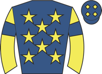 Prince Rasam ◆ 1 ⚠ draw | 4.33 | - | 5 | 6-6-2-6-6-2 | going✓ trip✓ | 68 ↓ | 89 | ★★★★☆ | Midfield, pushed along and headway between horses over 2f out, challenged leader with brie | |
| 6 | 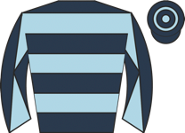 Thiscouldbefun M2 | 5.00 | - | 8 | 6-10-3-10-1-4 | 3r 1W | trip✓ trk✓ draw✓ | 66 ↓ | 82 | ★★★☆☆ | Led, ridden and headed over 2f out, weakened 1f out |
| 2 | Decalogue ◆ 2 ⚠ draw | 5.50 | - | 3 | 8-6-8-4-3 | 69 | 90 | ★★★★☆ | Slowly away, held up in rear, ridden 3f out, switched left over 2f out, headway entering f | ||
| 4 | Virtue Patience ⚠ hard trk ▲ cls | 6.50 | - | 6 | 6-5-3-6-4-7 | draw✓ | 63 ↓ | 90 | ★★★★★ | Midfield, ridden 2f out, in touch with leaders entering final furlong, weakened inside fin | |
| 1 | 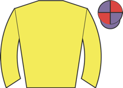 A La Noche ⚠ draw | 7.50 | - | 4 | 6-5-6-9 | 67 | 90 | ★★★☆☆ | Dwelt and slowly away, jumped path and bumped rival when edged sharply right-handed turnin | ||
| 7 | 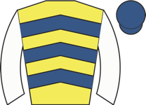 Special Ghaiyyath | 9.00 | - | 1 | 6-8-9-7-4-7 | 64 ↓ | 83 | ★★☆☆☆ | Midfield, pushed along over 2f out, soon held | ||
| 5 | 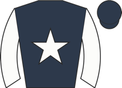 Musashi ⚠ IRE form | 9.00 | - | 2 | 14-12-11-2-2-12 | 65 | - | ★★☆☆☆ | Tracked leaders, niggled along at halfway, pushed along over 3f out, soon ridden and weake | ||
| 8 | 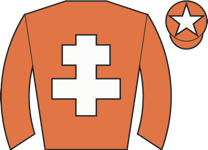 City Of God ◆ 3 | 26.00 | - | 7 | 8-1-5-8-5-8 | trip✓ draw✓ | 70 ↓ | 92 | ★★☆☆☆ | Prominent, pushed along 3f out, lost place over 2f out, soon well beaten |
| Res | Horse | Price | BSP | Dr | Form | Crse | Suit | OR | Spd | TF | Last comment |
|---|---|---|---|---|---|---|---|---|---|---|---|
| 2 | 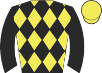 Night Star ◆ 1 | 2.62 | - | 8 | 5-3-3 | draw✓ | 82 | 90 | ★★★★★ | Prominent, chased leading pair inside final furlong, weakened towards finish | |
| 0 | 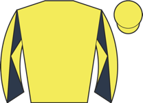 General Wolfe ⚠ draw | 5.50 | - | 6 | unraced | - | |||||
| 0 | 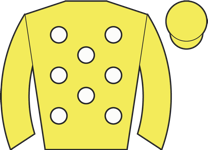 My Boy ◆ 2 | 6.50 | - | 1 | 4 | 88 | Tracked leaders, green and edged left 2f out, stayed on same pace inside final furlong | ||||
| 5 | 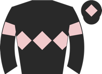 Lauriger | 7.00 | - | 3 | unraced | - | |||||
| 1 | Rock In Japan | 8.50 | - | 9 | unraced | draw✓ | - | ||||
| 4 | 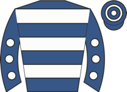 Cashinoroyale ⚠ draw | 13.00 | - | 4 | unraced | - | |||||
| 6 | Vardo ◆ 3 ⚠ draw | 15.00 | - | 5 | 6 | 87 | Mid-division, ridden over 3f out, weakened 2f out | ||||
| 3 | 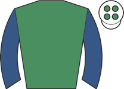 Mulvaney's Return ⚠ hard trk | 21.00 | - | 7 | 6 | draw✓ | 80 | Held up in rear, shaken up over 3f out, well beaten over 2f out | |||
| 7 | 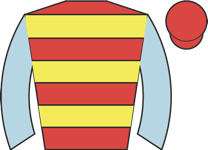 There Goes My Hero ⚠ hard trk | 51.00 | - | 2 | 10 | 73 | Dwelt in stalls, slowly away, ran green in rear and soon detached, tailed off final furlon |
| Res | Horse | Price | BSP | Dr | Form | Crse | Suit | OR | Spd | TF | Last comment |
|---|---|---|---|---|---|---|---|---|---|---|---|
| 2 | Hereward ◆ 1 | 2.50 | - | 9 | 3 | draw✓ | - | ||||
| 1 | 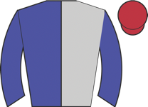 Rose Moon ⚠ draw | 6.00 | - | 6 | unraced | - | |||||
| 7 | 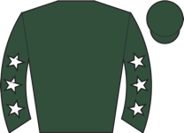 Ahmadi ◆ 2 | 8.00 | - | 8 | 4 | draw✓ | 88 | Slowly int stride, green, in rear, ridden over 2f out, headway to chase leaders over 1f ou | |||
| 3 | 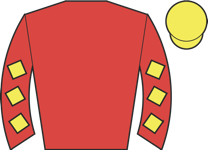 Caelan's Rose | 8.00 | - | 2 | unraced | - | |||||
| 5 | 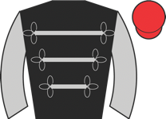 Miss Faithfull ⚠ draw | 9.00 | - | 4 | unraced | - | |||||
| 9 | 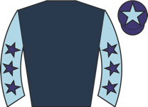 Play Again Sammy | 11.00 | - | 1 | unraced | - | |||||
| 6 | 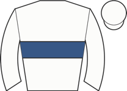 Mr Badger ★ EYE ⚠ hard trk ⚠ draw ▲ cls | 13.00 | - | 5 | 5 | 85 | Mid-division, pushed along 5f out, outpaced over 2f out, kept on inside final furlong | ||||
| 4 | 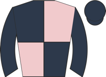 Minsmere ◆ 3 ⚠ hard trk | 17.00 | - | 7 | 5 | draw✓ | 92 | Prominent, pushed along 3f out, ridden over 2f out, plugged on from 1f out, no extra and l | |||
| 8 | 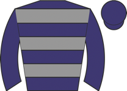 Mad Jack ▼ cls | 26.00 | - | 3 | 8 | 82 | Held up in rear, outpaced early and soon dropped to last, some headway from 1f out, kept o |
| Res | Horse | Price | BSP | Dr | Form | Crse | Suit | OR | Spd | TF | Last comment |
|---|---|---|---|---|---|---|---|---|---|---|---|
| 2 | 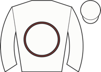 Thi Qar ◆ 3 | 3.75 | - | 3 | 2 | trip✓ | 85 | Midfield, smooth progress 2f out, ridden over 1f out, led final furlong, headed near finis | |||
| 1 | 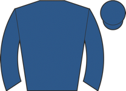 Miss Miniver ◆ 1 ▲ cls | 5.00 | - | 4 | 2 | trip✓ | 93 | In touch, pushed along and switched to outside over 2f out, headway into second 1f out, ke | |||
| 5 | 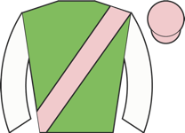 Concurrent | 6.00 | - | 9 | unraced | - | |||||
| 3 | 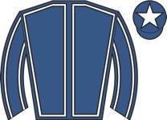 Ellavara | 7.00 | - | 2 | unraced | - | |||||
| 6 | 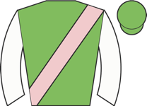 Quintana | 7.50 | - | 1 | unraced | - | |||||
| 4 | 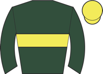 Learning | 11.00 | - | 6 | 5 | - | |||||
| 7 | 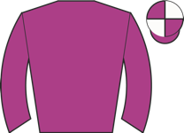 Rubyroo ◆ 2 ★ EYE ▲ cls | 13.00 | - | 7 | 3 | 91 | Midfield, ridden and headway over 2f out, kept on inside final furlong, ran on strongly to | ||||
| 8 | 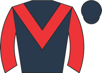 Reveillez | 15.00 | - | 5 | unraced | - | |||||
| 0 | 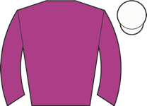 Costa Verde ▲ cls | 26.00 | - | 8 | 9 | 90 | Went right start, took keen hold, held up in midfield, ridden over 2f out, no impression e |
| Res | Horse | Price | BSP | Dr | Form | Crse | Suit | OR | Spd | TF | Last comment |
|---|---|---|---|---|---|---|---|---|---|---|---|
| 0 | 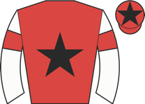 Miss Kodi ◆ 2 | 3.00 | - | 6 | 1-5-4 | going✓ trip✓ | 95 | 95 | ★★★★☆ | Prominent, soon raced in second, ridden and lost one place inside final furlong, kept on | |
| 0 | Nuit D'eclair ◆ 1 ⚠ draw | 4.00 | - | 8 | 1-4-2 | trip✓ | 100 | 92 | ★★★★☆ | Wore hood to post, raced keenly in midfield, smooth progress between horses 2f out, shaken | |
| 0 | Dark Issue ⚠ draw | 6.00 | - | 11 | 1-4-8 | trip✓ | 97 | 93 | ★★★★★ | Raced far side, front mid-division, pushed along and weakened well over 1f out | |
| 0 | 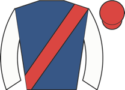 Harlequin Sky | 11.00 | - | 2 | 3-5-3-6-4 | trk✓ draw✓ | 93 | 90 | ★★★☆☆ | Held up in touch, progress over 2f out, pushed along to challenge over 1f out, weakened fi | |
| 0 | 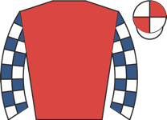 Love Is | 13.00 | - | 4 | 1-2-14-6 | going✓ trip✓ | 86 | 94 | ★★☆☆☆ | Midfield, ridden over 2f out, no telling impression | |
| 0 | 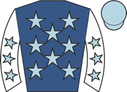 Acclamation Star ⚠ draw | 15.00 | - | 9 | 1-10-6-2-7 | trip✓ trk✓ | 93 ↑ | 94 | ★★★☆☆ | Mid-division, not much room over 2f out, never threatened | |
| 0 | 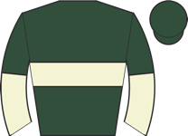 Lola De Valence ▲ cls | 17.00 | - | 7 | 3-1 | 1r 1p | trip✓ trk✓ | 83 | 92 | Prominent, travelled strongly and led 2f out, steadily went clear from over 1f out, pushed | |
| 0 | 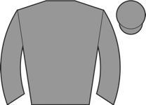 Elevating | 17.00 | - | 1 | 2-9-1-5 | trip✓ draw✓ | 84 | 92 | ★★☆☆☆ | Chased leaders, ridden and unable to quicken over 1f out, kept on same pace final furlong | |
| 0 | 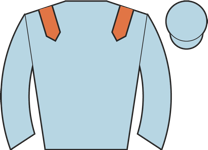 Fillipas ★ EYE ▲ cls | 17.00 | - | 5 | 2-10-1 | 1r 1W | going✓ trip✓ trk✓ | 82 | 89 | ★★★☆☆ | Held up behind leaders, ridden 3f out, headway to chase leaders 2f out, ran on strongly fr |
| 0 | Miss Lizzy ▲ cls | 21.00 | - | 3 | 4-1-5-11-3-7 | trip✓ trk✓ draw✓ | 89 | 96 | ★★☆☆☆ | Wore hood to post, midfield, ridden 2f out, kept on same pace final furlong | |
| 0 | 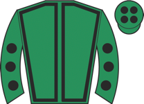 Impulsive Spirit ◆ 3 ★ EYE ⚠ hard trk ⚠ draw ▲ cls | 26.00 | - | 10 | 1 | 92 | Slowly away, held up in rear, headway from 2f out, ridden inside final furlong, ran on str |
| Res | Horse | Price | BSP | Dr | Form | Crse | Suit | OR | Spd | TF | Last comment |
|---|---|---|---|---|---|---|---|---|---|---|---|
| 0 | 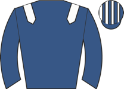 Albaydaa ⚠ ground | 3.75 | - | 3 | 1-3-2-1-5-8 | trk✓ draw✓ | 88 ↑ | 93 | ★★★☆☆ | Taken down early and wore earplugs in preliminaries, midfield, chased leaders over 1f out, | |
| 0 | Zen Diva ◆ 2 M2 ▲ cls | 6.50 | - | 5 | 2-3-1-1-20-1 | 2r 2W | trip✓ trk✓ | 90 | 91 | ★★★★☆ | Soon led, ridden to assert over 2f out, quickened clear 2f out, , pushed out final furlong |
| 0 | Havana Pusey | 7.00 | - | 1 | 1-3-7-7-9-2 | draw✓ | 94 | 93 | ★★★★☆ | Wore earplugs throughout, led, ridden over 1f out, headed final 110yds, no match for winne | |
| 0 | 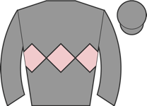 Miss Nightcap ◆ 1 ▼ cls | 7.50 | - | 6 | 2-2-1-1-10 | trip✓ trk✓ | 88 | 92 | ★★★★★ | Wore hood to post, prominent, ridden and lost position over 1f out, soon weakened quickly | |
| 0 | 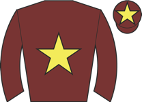 Angel Shared ◆ 3 ★ EYE ⚠ ground ▲ cls | 7.50 | - | 4 | 3-13-6-4-9-1 | trip✓ trk✓ | 79 ↓ | 95 | ★★★☆☆ | Wore hood to post, took keen hold, raced far side, led, ridden and headed 2f out, rallied | |
| 0 | 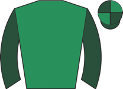 Stimulative Trip ⚠ ground ▼ cls | 9.00 | - | 2 | 1-9-6-3-8 | draw✓ | 90 | 92 | ★★☆☆☆ | ||
| 0 | 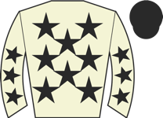 Fleetwater ⚠ draw ▲ cls | 11.00 | - | 11 | 6-2-3-9-1-8 | 1r 1W | trip✓ trk✓ | 83 | 94 | ★★★☆☆ | Raced near side, chased leaders, ridden under 2f out, no impression |
| 0 | 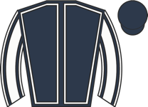 Lyra Lea ▲ cls | 15.00 | - | 7 | 3-4-2-2-1-6 | 1r 1p | going✓ trk✓ | 78 ↑ | 89 | ★★☆☆☆ | Hung left and raced keenly, prominent, bumped rival after 1f, no extra when not much room |
| 0 | 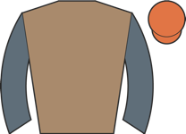 Betty Clover ⚠ draw | 17.00 | - | 9 | 16-5-5-4-23-6 | 91 | 93 | ★★★☆☆ | Midfield, asked for effort and headway over 1f out, plugged on without threatening | ||
| 0 | 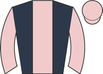 Passing Thought ⚠ draw ▲ cls | 26.00 | - | 8 | 2-1-7-1-14-9 | trip✓ | 84 | 93 | ★☆☆☆☆ | Took keen hold, always behind | |
| 0 | 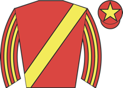 Cindy Lou Who ⚠ draw ⚠ ground | 26.00 | - | 10 | 2-9-9-5-12-14 | trk✓ | 84 | 94 | ★☆☆☆☆ | Mid-division, pushed along over 2f out, weakened 1f out |
| Res | Horse | Price | BSP | Dr | Form | Crse | Suit | OR | Spd | TF | Last comment |
|---|---|---|---|---|---|---|---|---|---|---|---|
| 0 | 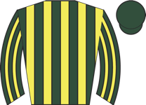 Colourband ◆ 2 ★ EYE ▲ cls | 2.88 | - | 2 | 2-1-6-4-2-1 | trip✓ trk✓ | 89 | 91 | ★★★★☆ | Led, headed after 2f, settled to race in close second, pushed along to press leader 2f out | |
| 0 | 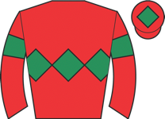 Boyfriend ◆ 1 M2 | 6.00 | - | 8 | 5-6-8-1-3-2 | trip✓ draw✓ | 92 | 93 | ★★★★☆ | Midfield, waiting for room over 2f out, not clear run when shaken up 2f out, ridden and ma | |
| 0 | 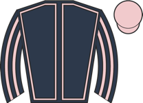 Principality ⚠ draw ⚠ ground | 8.00 | - | 4 | 5-11-1-5-1-4 | trip✓ trk✓ | 91 | 96 | ★★★★☆ | Wore hood to post, held up in touch, asked for effort over 1f out, went fourth near finish | |
| 0 | Point Of Contact ⚠ draw | 9.00 | - | 6 | 5-6-6-1-8-4 | 87 | 99 | ★★★★★ | Midfield, ridden and headway 3f out, every chance 1f out, kept on same pace inside final f | ||
| 0 | Time Loop ★ EYE ▲ cls | 9.00 | - | 9 | 2-1-2-4-8-4 | trip✓ trk✓ draw✓ | 83 | 91 | ★★☆☆☆ | Mounted in chute and went to post early in hood, midfield, ridden and outpaced over 2f out | |
| 0 | Shipbourne | 11.00 | - | 10 | 1-3-1-13 | draw✓ | 88 | 83 | ★★★☆☆ | Midfield, headway halfway, pushed along over 3f out, impeded over 1f out, weakened quickly | |
| 0 | Looka ◆ 3 | 13.00 | - | 11 | 6-1-5-5 | draw✓ | 90 | 94 | ★★☆☆☆ | Took keen hold in touch, asked for effort 2f out, never going pace to challenge | |
| 0 | Electric Dreams | 13.00 | - | 3 | 4-7-1-12 | going✓ trip✓ | 85 | 90 | ★★★☆☆ | Towards rear, pushed along over 2f out, soon ridden, no chance from over 1f out, kept on s | |
| 0 | Skipper | 17.00 | - | 1 | 5-6-1-13-9-6 | trip✓ | 88 | 91 | ★★★☆☆ | Chased leaders, pushed along 3f out, ridden well over 1f out, no impression | |
| 0 | Zoffandia ⚠ draw ▲ cls | 21.00 | - | 7 | 3-1-5-7-2-7 | trip✓ | 80 ↑ | 94 | ★★☆☆☆ | Took keen hold, midfield, pushed along 2f out, soon held | |
| 0 | One Smack Mac ⚠ draw | 67.00 | - | 5 | 2-15-13-28-9-18 | 92 ↓ | 90 | ★☆☆☆☆ | Went to post early, slowly away, always behind |
| Res | Horse | Price | BSP | Dr | Form | Crse | Suit | OR | Spd | TF | Last comment |
|---|---|---|---|---|---|---|---|---|---|---|---|
| 0 | Redbud Sixteen ◆ 2 | 3.75 | - | 3 | 2-3-8-1-1-7 | 1r 1W | trip✓ trk✓ | 85 ↑ | 92 | ★★★☆☆ | Wore hood to start, led, came towards nearside over 4f out, pushed along when headed 3f ou |
| 0 | Kamaway M2 | 5.00 | - | 4 | 4-8-1-2-1-5 | 1r 1W | trk✓ | 72 ↑ | 91 | ★★★★★ | Ran in snatches, held up in rear, brief headway entering final furlong, kept on same pace |
| 0 | Aleatrix M2 ▼ cls ⚠ 2 runs | 5.00 | - | 2 | 1-2 | 1r 1W | trip✓ trk✓ | 87 | 87 | Led, ridden and joined over 2f out, headed over 1f out, no impression on winner inside fin | |
| 0 | Zgharta ⚠ ground ▼ cls | 5.50 | - | 7 | 4-11-6-12-4-7 | 83 ↓ | 92 | ★★★☆☆ | Wore hood to post, took keen hold, briefly raced solo on far side, in touch with leaders a | ||
| 0 | Lucky Camino ◆ 1 | 8.00 | - | 5 | 2-2-3-1-3 | going✓ trk✓ | 84 | 93 | ★★★★☆ | Midfield, headway 2f out, short of room and denied clear run over 1f out, ran on when in c | |
| 0 | Leonardo Blu ▼ cls | 11.00 | - | 6 | 2-1-4-8 | trk✓ | 80 | 89 | ★★☆☆☆ | Shifted right start, in touch with leaders, shaken up 3f out, bit short of room when makin | |
| 0 | Chapter ◆ 3 | 13.00 | - | 1 | 1-3-6-1-2-7 | 1r 1W | trip✓ trk✓ | 80 ↑ | 91 | ★★★☆☆ | Slowly away, in rear, outpaced from 2f out, weakened over 1f out |
| Res | Horse | Price | BSP | Dr | Form | Crse | Suit | OR | Spd | TF | Last comment |
|---|---|---|---|---|---|---|---|---|---|---|---|
| 9 | I'd Go Maniac ◆ 1 ★ EYE | 5.00 | - | 1 | 8-5-2-4-3-1 | trip✓ | 70 ↓ | 84 | ★★★☆☆ | Slowly away, held up in rear, steady headway 3f out, went second going okay over 2f out, r | |
| 6 | Flightofthephoenix ◆ 2 M2 | 6.00 | - | 11 | 3-7-7-2-1-1 | going✓ trip✓ trk✓ | 68 | 88 | ★★★★★ | Went to post early in hood, held up in midfield, ridden 2f out, headway to chase leader ov | |
| 1 | Star Start ▲ cls | 7.00 | - | 10 | 5-3-2-1-2-2 | trip✓ trk✓ | 57 | 85 | ★★★☆☆ | Prominent in chasing group, went second over 2f out, chased clear leader over 1f out, soon | |
| 0 | Recobella ★ EYE ▲ cls | 7.00 | - | 5 | 5-2-5-1-2-1 | going✓ trip✓ trk✓ | 60 | 84 | ★★★☆☆ | Raced keenly in third, closed up 4f out, pressed leader well over 2f out, pushed along 2f | |
| 4 | Austrian Theory ★ EYE ⚠ ground | 7.50 | - | 4 | 9-7-5-8-5-3 | 69 ↓ | 85 | ★★★★☆ | Front rank, went second over 3f out, pushed along over 2f out, ridden and lost second over | ||
| 2 | Spirit Catcher ⚠ ground ▲ cls | 8.50 | - | 13 | 2-8-5-7-5-4 | trk✓ | 62 | 90 | ★★★☆☆ | Towards rear, steady headway but plenty to do over 2f out, ridden and kept on from over 1f | |
| 10 | Ribble River | 11.00 | - | 12 | 3---5-5-6-6 | 1r 1p | trk✓ | 69 | 53 | ★★☆☆☆ | Towards rear, not fluent 3rd, pushed along after 2 out, no progress |
| 5 | Revelio ⚠ ground | 11.00 | - | 6 | 6-9-10-2-5-4 | 62 | 82 | ★★★☆☆ | Raced wide and midfield, dropped to rear after 2f, ridden over 3f out, outpaced over 1f ou | ||
| 3 | Alpine Sierra ◆ 3 ▼ cls | 13.00 | - | 2 | 1-1-1-9-3-5 | trip✓ trk✓ | 64 ↑ | 88 | ★★☆☆☆ | Led, headed over 2f out, weakened quickly inside final furlong | |
| 0 | Roland Garros | 26.00 | - | 9 | 7-10-5-3-4-7 | 66 ↓ | 80 | ★★☆☆☆ | Handy in second, pushed along 4f out, weakened 2f out | ||
| 8 | Red Derek | 34.00 | - | 3 | 3-5-6-4-4-6 | 1r | 52 | 86 | ★☆☆☆☆ | Prominent, ridden and dropped to rear 3f out, soon weakened | |
| 7 | Shahbaz | 34.00 | - | 7 | 8-2-4-6-6-6 | trk✓ | 57 ↓ | 77 | ★★☆☆☆ | Held up towards rear, ridden along over 2f out, weakened over 1f out | |
| 11 | Cavalry Call ⚠ ground ▲ cls | 101.00 | - | 8 | 8---9-7-13-11 | 55 ↓ | 72 | ★☆☆☆☆ | Led, ridden and headed 3f out, weakened quickly, tailed off |
| Res | Horse | Price | BSP | Dr | Form | Crse | Suit | OR | Spd | TF | Last comment |
|---|---|---|---|---|---|---|---|---|---|---|---|
| 1 | Burning Up ◆ 1 ★ EYE | 2.75 | - | 2 | 1 | 1r 1W | trip✓ trk✓ | 85 | Held up towards rear, shaken up over 2f out, switched right for clear run and headway over | ||
| 4 | Zarak Crown | 7.00 | - | 6 | unraced | - | |||||
| 8 | Austin ◆ 2 | 8.00 | - | 5 | unraced | - | |||||
| 2 | Hands To Yourself | 8.00 | - | 1 | unraced | - | |||||
| 7 | Bedford Benny Boy ◆ 3 | 11.00 | - | 8 | unraced | - | |||||
| 6 | Sir Terry Hadley | 11.00 | - | 4 | unraced | - | |||||
| 9 | Tidal Force | 11.00 | - | 3 | unraced | - | |||||
| 3 | Under Arrest | 11.00 | - | 9 | 5-5 | 85 | Raced in third, pushed along 2f out, outpaced 1f out, soon weakened | ||||
| 5 | Dancing Dunes | 15.00 | - | 7 | 5 | 84 | Dwelt, in rear and ran green, no impression final 2f |
| Res | Horse | Price | BSP | Dr | Form | Crse | Suit | OR | Spd | TF | Last comment |
|---|---|---|---|---|---|---|---|---|---|---|---|
| 1 | Flying Pirate ◆ 1 ▼ cls | 3.50 | - | 4 | 1-3 | trk✓ | 85 | 92 | Unruly in preliminaries, sweating and led down to start, chased leaders, angled out and pu | ||
| 5 | Reflect On Glory ◆ 2 | 3.75 | - | 1 | 3-1 | trk✓ | 82 | 92 | Made all, pushed along approaching 2f out and faced strong challenge, ridden over 1f out, | ||
| 4 | All I Know ▼ cls | 5.50 | - | 5 | 5 | 91 | Went left start, slowly away towards rear of mid-division, ridden over 2f out, headway ove | ||||
| 2 | Maliqui | 8.00 | - | 3 | 5 | 89 | Slowly away, held up towards rear, headway 1f out, switched right inside final furlong, ra | ||||
| 7 | Lopefernza ▼ cls | 9.00 | - | 7 | 6-6 | 89 | Wore red hood to post, chased leaders, pushed along well over 2f out, no impression | ||||
| 3 | Perfect Gal ◆ 3 | 11.00 | - | 6 | unraced | - | |||||
| 6 | Frankie Power | 11.00 | - | 2 | unraced | - |
| Res | Horse | Price | BSP | Dr | Form | Crse | Suit | OR | Spd | TF | Last comment |
|---|---|---|---|---|---|---|---|---|---|---|---|
| 6 | Katie's Cavalier ◆ 1 ★ EYE | 5.00 | - | 9 | 5-6-6-4-1 | trip✓ draw✓ | 70 | 90 | ★★★☆☆ | Led, shaken up over 3f out, headed briefly over 1f out, rallied, ran on gamely towards fin | |
| 4 | Koodini ◆ 3 M2 ▼ cls | 6.50 | - | 10 | 11-2-2-3-1-12 | going✓ trip✓ trk✓ draw✓ | 73 ↑ | 88 | ★★☆☆☆ | Held up in rear, outpaced and ridden over 2f out, never in contention | |
| 7 | Green Titan M2 ⚠ draw ⚠ ground | 6.50 | - | 2 | 11-2-6-4 | trk✓ | 69 | 93 | ★★★★★ | Close up, restrained and tracked leaders after 1f, outpaced over 2f out, ridden and headwa | |
| 3 | Gerry's Darling ◆ 2 | 8.00 | - | 11 | 8-7-2-1-3 | trip✓ trk✓ draw✓ | 69 | 87 | ★★★☆☆ | Led, brought up centre straight, ridden and headed over 1f out, edged left and faded final | |
| 1 | Diplomata ▼ cls | 8.00 | - | 8 | 4-5-3 | 68 | 90 | ★★★★☆ | Reared and restless in stalls, soon raced in second, raced keenly, led over 2f out, headed | ||
| 5 | High Hazard ▼ cls | 8.50 | - | 5 | 9-2-3-16-13 | going✓ trip✓ trk✓ | 71 | 86 | ★★★☆☆ | Midfield, outpaced over 2f out, edged left over 1f out, never involved | |
| 2 | One Shot Kodi ⚠ draw ▼ cls | 9.00 | - | 3 | 8-7-4 | 66 | 89 | ★★★☆☆ | Keen, prominent, ridden to lead briefly over 2f out, soon headed but remained prominent, k | ||
| 8 | Tribal Appearance ⚠ draw ▼ cls | 13.00 | - | 4 | 2-4-4 | 1r | trk✓ | 74 | 86 | ★★★☆☆ | Wore hood to post, midfield, ridden 3f out, kept on same pace and lost position entering f |
| 9 | Vinery ▼ cls | 17.00 | - | 7 | 6-2-7 | 71 | 90 | ★☆☆☆☆ | Mid-division, ridden over 3f out, weakened 2f out | ||
| 0 | Greek Street | 17.00 | - | 12 | 5-2-6-6 | draw✓ | 66 | 89 | ★★☆☆☆ | Took keen hold in mid-division, ridden and weakened over 1f out | |
| 0 | Peggy's Lad ⚠ ground | 17.00 | - | 6 | 15-8-1-5 | trip✓ trk✓ | 66 | 90 | ★★★☆☆ | Prominent, ridden to press leader 2f out, faded over 1f out | |
| 10 | Unbeatable Fame ⚠ draw | 51.00 | - | 1 | 7-6-3-7 | trk✓ | 62 | 90 | ★☆☆☆☆ | Towards rear, always behind |
| Res | Horse | Price | BSP | Dr | Form | Crse | Suit | OR | Spd | TF | Last comment |
|---|---|---|---|---|---|---|---|---|---|---|---|
| 0 | Sharadd | 4.33 | - | 3 | unraced | - | |||||
| 0 | Time To Play | 5.00 | - | 8 | unraced | - | |||||
| 0 | Chapel Stream | 5.50 | - | 2 | unraced | - | |||||
| 0 | Al Arraab ◆ 3 | 7.00 | - | 4 | unraced | - | |||||
| 0 | Deputy Vice ◆ 2 ▲ cls | 8.00 | - | 6 | 3-4-4 | 77 | 93 | ★★★☆☆ | Wore hood to start, held up towards rear, unbalanced when hampered on bend just after end | ||
| 0 | Powerful Force | 8.00 | - | 5 | unraced | - | |||||
| 0 | Does Mary Know ◆ 1 ▼ cls | 9.00 | - | 7 | 6-2 | trip✓ trk✓ | 91 | Towards rear, pushed along to make headway over 1f out, took second inside final furlong, | |||
| 0 | Playfull Warrior ▲ cls | 21.00 | - | 1 | 11 | 85 | Midfield, nudged along over 4f out, ridden and weakened from 2f out |
| Res | Horse | Price | BSP | Dr | Form | Crse | Suit | OR | Spd | TF | Last comment |
|---|---|---|---|---|---|---|---|---|---|---|---|
| 0 | Hoseki ◆ 3 | 3.50 | - | 6 | 3-4-1-1-1-4 | trip✓ trk✓ | 88 ↑ | 88 | ★★★★★ | Wore red hood to post, in rear, pushed along and switched to outer under 3f out, stayed on | |
| 0 | Hollywell Stream M2 ▲ cls | 4.33 | - | 1 | 2-6-2-5-1 | trip✓ | 85 | 83 | ★★★☆☆ | Wore hood to start, soon raced in third, took second 3f out, pestered leaders over 1f out, | |
| 0 | Polygram ◆ 2 ▲ cls | 4.50 | - | 7 | 3-4-2-1-2-1 | going✓ trip✓ trk✓ | 76 ↑ | 95 | ★★★★☆ | Handy in second, pushed along over 2f out, ridden over 1f out, pressed leader over 110yds | |
| 0 | Lady Roisia ▼ cls | 6.00 | - | 2 | 3-1-3---8 | going✓ trk✓ | 90 | 84 | ★★★☆☆ | Towards rear of mid-division, pushed along over 3f out, ridden and weakened over 2f out | |
| 0 | Star Cast ◆ 1 ▲ cls | 8.00 | - | 3 | 1-3-2-1-1-2 | going✓ trip✓ trk✓ | 80 ↑ | 98 | ★★★★☆ | Dwelt, rear mid-division, improved steadily well over 3f out, took fourth and ridden over | |
| 0 | Geo ▲ cls | 11.00 | - | 4 | 2-4-2-2-3-4 | going✓ trk✓ | 69 | 93 | ★★★☆☆ | Wore hood to post, prominent, ridden and every chance 2f out, faded inside final furlong, | |
| 0 | Miss Tonnerre ⚠ ground | 26.00 | - | 5 | 5-7-7-10-4-13 | 83 ↓ | 92 | ★★★☆☆ | Held up in rear, asked for effort over 2f out, never in contention |
| Res | Horse | Price | BSP | Dr | Form | Crse | Suit | OR | Spd | TF | Last comment |
|---|---|---|---|---|---|---|---|---|---|---|---|
| 0 | Nightsinwhitesatin ◆ 2 | 4.00 | - | 2 | 2-2-4-2-2-2 | going✓ trk✓ | 79 | 88 | ★★★★★ | A little short of room start, held up in close third, switched left and improved into seco | |
| 0 | Pol Roger ◆ 1 M2 ▲ cls | 4.50 | - | 3 | 8-8-2-3-4-1 | going✓ trip✓ trk✓ | 75 | 97 | ★★★★☆ | Took keen hold, in touch with leaders, ridden and headway to lead 2f out, kept on final fu | |
| 0 | Pearl Eye | 6.50 | - | 11 | 1-3-6-1-4-6 | going✓ trip✓ trk✓ | 76 | 91 | ★★★☆☆ | Slowly into stride, in rear, pushed along well over 2f out, ran on final furlong, never on | |
| 0 | Freddie Steady Go ⚠ ground | 8.00 | - | 4 | 3-9-7-7-1-8 | trk✓ | 80 | 92 | ★★★☆☆ | Led, ridden 2f out, headed over 1f out, weakened final furlong | |
| 0 | Sharp Move | 9.00 | - | 9 | 4-1-8-8 | trip✓ trk✓ | 80 | 87 | ★★★☆☆ | Tracked leaders, ridden 2f out, soon weakened | |
| 0 | It'sneverjustone ⚠ ground ⚠ IRE form | 11.00 | - | 8 | 8-5-4-4-6-14 | 76 ↓ | 94 | ★★☆☆☆ | Towards rear, progress over 2f out, no impression under pressure entering straight | ||
| 0 | Arcadian Nights ⚠ ground | 13.00 | - | 10 | 10-4-5-4-6-5 | 75 ↓ | 90 | ★★☆☆☆ | Awkward and slowly away, held up in rear, pushed along over 3f out, hung right and made li | ||
| 0 | Storm Point ◆ 3 | 15.00 | - | 5 | 5-4-1-6-1-7 | going✓ | 78 ↑ | 92 | ★★★☆☆ | Awkward start, held up rear of mid-division, pushed along over 3f out, no impression | |
| 0 | Pomme Pomme ⚠ ground | 21.00 | - | 14 | 5-2-9-5-3-7 | trk✓ | 75 | 92 | ★★☆☆☆ | Led, ridden over 2f out, headed 2f out, weakened 1f out | |
| 0 | Night Patrol | 26.00 | - | 1 | 7-8-1-3-8-10 | going✓ | 78 | 92 | ★★☆☆☆ | Chased leaders, pushed along over 2f out and dropped away | |
| 0 | Knight Of Glory | 26.00 | - | 7 | 4-1-6-10-5 | 79 | 86 | ★★☆☆☆ | Chased leaders, raced keenly, ridden over 2f out, weakened 2f out, eased over 1f out | ||
| 0 | Blue To Blue ⚠ ground ▼ cls | 26.00 | - | 13 | 9-2-5-14-3-12 | 1r 1p | trk✓ | 78 | 92 | ★★☆☆☆ | Towards rear, ridden and headway 3f out, challenged over 2f out, no further progress |
| 0 | Mehmas Champion | 51.00 | - | 6 | 6-9-10-11 | 77 ↓ | 87 | ★★☆☆☆ | Mid-division, pushed along and outpaced well over 3f out, soon beaten | ||
| 0 | High Point ⚠ ground | 67.00 | - | 12 | 3-11-1-10-10-10 | 77 | 85 | ★★★☆☆ | Always in rear, tailed off from over 3f out, never travelled |
| Res | Horse | Price | BSP | Dr | Form | Crse | Suit | OR | Spd | TF | Last comment |
|---|---|---|---|---|---|---|---|---|---|---|---|
| 1 | Satyress ◆ 3 ⚠ ground | 2.75 | - | 7 | 4-7-6-4-1-1 | 1r | trip✓ trk✓ | 51 | 93 | ★★★★★ | Early to post, rear of midfield, ridden and outpaced well over 3f out, headway 2f out, str |
| 5 | Mr Withington M2 ⚠ ground | 4.33 | - | 3 | 7-7-6-4-5-2 | 1r | 49 ↓ | 89 | ★★★☆☆ | Held up in rear of mid-division, shaken up 3f out, ridden along and made steady headway fr | |
| 3 | Lawmans Blis ◆ 1 ★ EYE | 4.50 | - | 6 | 6-6-1-4-6-1 | 1r | going✓ trip✓ trk✓ | 49 ↑ | 89 | ★★★★☆ | Wore hood to start, midfield, headway on outer from over 2f out, led over 1f out, went cle |
| 2 | Gemini Man ◆ 2 | 6.00 | - | 8 | 1-1---9-2-4 | 2r 1W | going✓ trip✓ trk✓ | 54 | 90 | ★★★★☆ | Midfield, ridden 3f out, kept on same pace over 1f out, went fourth inside final 110yds, n |
| 4 | Bruce Banner | 11.00 | - | 2 | 2-3-5-2-4-4 | trip✓ trk✓ | 54 | 83 | ★★★☆☆ | Midfield, ridden over 3f out, lost third 2f out, weakened final furlong | |
| 8 | Porter's Song | 26.00 | - | 4 | 5-5-6-5-9-6 | 1r | 52 | 81 | ★★☆☆☆ | Tracked leaders, pushed along over 2f out, hung left but went second over 1f out, soon no | |
| 9 | Bouboule ⚠ ground ▼ cls | 34.00 | - | 1 | 7---7-7-11-6 | 1r | 53 ↑ | 66 | ★★☆☆☆ | Mid-division, in rear 4 out, pushed along next and beaten | |
| 6 | Neddies Boy ⚠ ground | 34.00 | - | 5 | 7-6-7-10-12-8 | 3r | 46 ↓ | 77 | ★★☆☆☆ | Towards rear, pushed along over 3f out, no progress | |
| 7 | Brunello Breeze ⚠ ground | 51.00 | - | 9 | 14-7-5-7-8-12 | 4r | 52 ↓ | 64 | ★★☆☆☆ | Very slowly away and tailed off in last throughout |
| Res | Horse | Price | BSP | Dr | Form | Crse | Suit | OR | Spd | TF | Last comment |
|---|---|---|---|---|---|---|---|---|---|---|---|
| 4 | Junkyard Dog ⚠ draw ▲ cls | 3.75 | - | 3 | 12-6-7-9-2-1 | 2r | going✓ trk✓ | 68 ↓ | 89 | ★★★★☆ | Mid-division, ridden 2f out, headway to lead 1f out, ran on gamely final furlong |
| 6 | Shimmering Sands ◆ 2 M2 ⚠ draw | 4.50 | - | 2 | 5-3-4-1-1-3 | 2r | trip✓ trk✓ | 75 ↑ | 81 | ★★★★☆ | Wore hood to post, took keen hold, in touch in rear, ridden and no impression over 1f out |
| 3 | Amidst The Chaos ◆ 3 M2 | 4.50 | - | 4 | 2-1-2-5-13-2 | trip✓ trk✓ draw✓ | 74 ↑ | 86 | ★★★☆☆ | Midfield, switched right and ridden over 2f out, headway to lead narrowly over 1f out, soo | |
| 7 | Mwafaq ◆ 1 ▼ cls | 6.50 | - | 7 | 5-2-1-1-2-5 | trk✓ | 73 ↑ | 97 | ★★★★★ | Blindfold slow to be removed, very slowly away, in rear, ridden 3f out, headway 1f out, ra | |
| 5 | Finlaggan ★ EYE ⚠ ground | 8.00 | - | 5 | 8-8-2-7-4-4 | trip✓ trk✓ draw✓ | 68 | 84 | ★★★☆☆ | Chased leaders, lost place and switched right 2f out, kept on inside final 110 yards | |
| 1 | Qitaal | 9.00 | - | 8 | 2-3-3-4-6-5 | trip✓ trk✓ | 72 | 87 | ★★★☆☆ | Prominent, switched right and ridden 2f out, headway to briefly press leader entering fina | |
| 2 | Mao Shang Wong ⚠ ground ▼ cls | 15.00 | - | 6 | 8-1-13-2-7-5 | 1r | trip✓ trk✓ draw✓ | 74 | 89 | ★★☆☆☆ | Held up in rear, pushed along over 3f out, always behind |
| 8 | Rodoya ⚠ ground ▼ cls | 51.00 | - | 9 | 1-3-8-6-8 | 73 | 75 | ★★☆☆☆ | Held up in midfield, ridden over 2f out, faded inside final furlong | ||
| 9 | Livonian ⚠ draw ▼ cls | 101.00 | - | 1 | 1-3-5-11-14-10 | 1r 1p | trk✓ | 70 ↓ | 88 | ★☆☆☆☆ | Took keen hold, tracked leaders, lost position 4f out, soon pushed along and weakened |
| Res | Horse | Price | BSP | Dr | Form | Crse | Suit | OR | Spd | TF | Last comment |
|---|---|---|---|---|---|---|---|---|---|---|---|
| 1 | Interstate ◆ 2 ★ EYE ▲ cls | 2.00 | - | 4 | 10-2-2-2 | going✓ trip✓ trk✓ | 83 | 86 | ★★★★★ | Raced in second, ridden to briefly lead over 1f out, soon headed, rallied and pressed winn | |
| 3 | Quiet Summer ◆ 1 ▲ cls | 2.20 | - | 3 | 4-2 | going✓ | 87 | Led early, headed after 1f, dropped to midfield before halfway, headway from 3f out, took | |||
| 2 | Treble Bass | 8.00 | - | 2 | 6-3 | 86 | Mid-division, headway and ridden over 3f out, kept on one pace from over 1f out | ||||
| 4 | Brittunculi ◆ 3 | 67.00 | - | 1 | unraced | - |
| Res | Horse | Price | BSP | Dr | Form | Crse | Suit | OR | Spd | TF | Last comment |
|---|---|---|---|---|---|---|---|---|---|---|---|
| 1 | Home Secretary ◆ 1 ▲ cls | 1.50 | - | 3 | 6-7-9-5-5-1 | 1r | going✓ trip✓ | 68 | 79 | ★★★★★ | Led, pushed along to go clear 2f out, ridden over 1f out, reduced lead towards finish but |
| 2 | Tarbat Ness ◆ 2 M2 | 3.50 | - | 1 | 4-5-3-1-12-3 | trk✓ | 72 | 76 | ★★★★☆ | Held up in touch, smooth progress 3f out, ridden over 1f out, challenged 1f out, faded fin | |
| 3 | It's All About You ◆ 3 ▼ cls | 9.00 | - | 2 | 1-4-8-13-8-9 | trip✓ | 75 ↑ | 67 | ★★★☆☆ | Not always fluent, always towards rear, well beaten 3 out | |
| 4 | Sharona ▼ cls | 51.00 | - | 4 | 2-4-5-13-10-9 | 62 ↓ | 70 | ★★☆☆☆ | Mid-division, lost position and pushed along before halfway, tailed off 3f out |
| Res | Horse | Price | BSP | Dr | Form | Crse | Suit | OR | Spd | TF | Last comment |
|---|---|---|---|---|---|---|---|---|---|---|---|
| 0 | Mussab ◆ 1 ⚠ draw ▼ cls | 1.53 | - | 6 | 3-3-6 | trk✓ | 97 | 94 | ★★★★★ | Towards rear, switched left and ridden 2f out, steady headway but plenty to do over 1f out | |
| 0 | What A Girl Wants | 4.50 | - | 3 | 3-2-2-21-4-4 | trip✓ | 81 | 89 | ★★★☆☆ | In touch with leaders, hung right when disputed second 1f out, weakened towards finish | |
| 0 | Caelum ◆ 2 | 7.00 | - | 1 | unraced | - | |||||
| 0 | Perfect Strike | 11.00 | - | 2 | 7-5 | 89 | Took keen hold, prominent, ridden over 1f out, weakened inside final furlong | ||||
| 0 | Cyberspace ◆ 3 | 26.00 | - | 8 | unraced | draw✓ | - | ||||
| 0 | Aeternitas ⚠ draw | 26.00 | - | 5 | unraced | - | |||||
| 0 | One More Tilda ▲ cls | 26.00 | - | 7 | 6 | draw✓ | 88 | In touch with leaders, not clear run 2f out, soon switched left and ridden, weakened final | |||
| 0 | Taj Mahal Palace ▼ cls | 34.00 | - | 9 | 7-5 | draw✓ | 87 | Wore hood to start, in touch with leaders, pushed along over 1f out, soon outpaced, weaken | |||
| 0 | Golden Buzz ⚠ draw ▲ cls | 101.00 | - | 4 | 8-7 | 90 | Wore hood to start, towards rear, pushed along 2f out, weakened inside final furlong |
| Res | Horse | Price | BSP | Dr | Form | Crse | Suit | OR | Spd | TF | Last comment |
|---|---|---|---|---|---|---|---|---|---|---|---|
| 0 | Willowinghurn ◆ 2 | 3.75 | - | 12 | 5-12-5-6-8-3 | draw✓ | 55 ↓ | 89 | ★★★★★ | Prominent, ridden over 2f out, kept on to challenge inside final furlong, no extra and los | |
| 0 | Victory Sound ◆ 3 M2 | 4.50 | - | 10 | 10-7-3-3-6-2 | going✓ trip✓ draw✓ | 49 ↓ | 90 | ★★★★☆ | Dwelt, mid-division, pushed along and closed 2f out, ridden into fourth 1f out, ran on to | |
| 0 | Ndoto ⚠ draw ▼ cls | 8.00 | - | 1 | 3-4-5 | trk✓ | 51 | 89 | ★★☆☆☆ | In rear, lost touch over 2f out | |
| 0 | Yaahobby | 8.50 | - | 5 | 2-7-3-6-6-4 | 6r 2p | going✓ trk✓ | 45 | 93 | ★★☆☆☆ | Tracked sole rival far side, pushed along over 1f out, went fourth final furlong, just den |
| 0 | Turbo Command ◆ 1 ⚠ draw | 11.00 | - | 4 | 5-5-9-2-3-6 | 2r | going✓ trip✓ trk✓ | 51 ↓ | 93 | ★★★☆☆ | Raced freely, prominent, ridden over 2f out, no extra inside final furlong |
| 0 | Bizarre Law | 13.00 | - | 11 | 4-1-7-10-4-8 | trip✓ draw✓ | 48 | 91 | ★★★☆☆ | Slowly away, held up in rear, detached after 1f, well behind over 3f out, kept on from 2f | |
| 0 | Forever Twenty ⚠ ground | 13.00 | - | 9 | 7-3-6-10-3-9 | 1r | trk✓ | 48 ↓ | 88 | ★★★☆☆ | Midfield, outpaced and dropped to rear over 1f out, soon lost touch |
| 0 | Power Of Chora | 15.00 | - | 13 | 6-6-8-3-8-10 | trk✓ draw✓ | 47 ↓ | 91 | ★★★☆☆ | Dwelt, always in rear | |
| 0 | Mrbluesky ⚠ draw ⚠ ground | 15.00 | - | 3 | 3-5-5-7-4-8 | 2r | trk✓ | 52 ↓ | 87 | ★★☆☆☆ | Chased leaders, lost place over 2f out, well beaten over 1f out |
| 0 | Bantz | 21.00 | - | 14 | 14-7-9-7-11-7 | draw✓ | 45 ↓ | 91 | ★★☆☆☆ | Prominent, taken towards centre to make headway 2f out, outpaced inside final furlong, wea | |
| 0 | Maid On The Shelf ⚠ ground | 21.00 | - | 7 | 7-4-7-6 | 45 | 77 | ★★☆☆☆ | Towards rear, dropped to last over 2f out, weakened inside final furlong, detached towards | ||
| 0 | Blairtum Night ⚠ draw ⚠ ground | 26.00 | - | 2 | 8-6-4-9-6 | 2r | 50 | 87 | ★★☆☆☆ | Took keen hold, towards rear, ridden 2f out, soon switched right, not clear run throughout | |
| 0 | Shatin Beauty ⚠ ground ▼ cls | 34.00 | - | 8 | 6-6-9 | 45 | 86 | ★☆☆☆☆ | Always towards rear | ||
| 0 | Fair Isle Sioux | 51.00 | - | 6 | 5-6-5-8-16 | 47 | 84 | ★★☆☆☆ | Prominent central group, pushed along and lost position over 2f out, weakened to last over |
| Res | Horse | Price | BSP | Dr | Form | Crse | Suit | OR | Spd | TF | Last comment |
|---|---|---|---|---|---|---|---|---|---|---|---|
| 0 | Dream Forever ◆ 2 ★ EYE | 3.50 | - | 5 | 2-4-13-12-11-1 | 2r 1p | going✓ trip✓ trk✓ | 48 ↓ | 93 | ★★★★☆ | Prominent, edged left 3f out, chased leaders 2f out, ridden 1f out, took third 1f out, ran |
| 0 | Asadjumeirah ◆ 1 M2 ⚠ draw | 4.50 | - | 3 | 3-8-6-9-1-6 | 4r 1W | going✓ trip✓ trk✓ | 52 | 94 | ★★★★★ | Keen in midfield, pushed along and headway to press leader over 2f out, plugged along same |
| 0 | Northern Tempest ◆ 3 ⚠ ground | 5.00 | - | 9 | 8-3-4-6-5-5 | trk✓ draw✓ | 52 ↓ | 93 | ★★★☆☆ | Led, ridden when headed just over 1f out, weakened towards finish | |
| 0 | Liquid Cooled ⚠ draw | 6.50 | - | 2 | 11-1-4-3-5-6 | 2r 1W | going✓ trip✓ trk✓ | 50 | 91 | ★★★★☆ | Held up in touch, outpaced 3f out, soon pushed along, minor progress 1f out, never threate |
| 0 | Reenie's Dream ⚠ ground | 7.50 | - | 7 | 10-9-9-4-8-8 | 2r | draw✓ | 53 | 89 | ★★★☆☆ | Obtained prior permission to run partially shod, mounted on chute and taken down early, to |
| 0 | Victory Sound ⚠ draw | 8.50 | - | 1 | 10-7-3-3-6-2 | going✓ | 49 ↓ | 90 | Dwelt, mid-division, pushed along and closed 2f out, ridden into fourth 1f out, ran on to | ||
| 0 | Tommie's Angel | 11.00 | - | 6 | 4-7-11-5 | 50 | 92 | ★★☆☆☆ | In rear, pushed along well over 1f out, plugged on past beaten rivals | ||
| 0 | Newyorkstateofmind ⚠ ground | 15.00 | - | 4 | 6-8-4-8-6-9 | 2r | 45 | 93 | ★★☆☆☆ | Went early to post, in rear, never a factor | |
| 0 | Global Effort ⚠ ground | 51.00 | - | 8 | 3-6-9-8-8-8 | draw✓ | 45 | 90 | ★☆☆☆☆ | Keen and in rear throughout |
| Res | Horse | Price | BSP | Dr | Form | Crse | Suit | OR | Spd | TF | Last comment |
|---|---|---|---|---|---|---|---|---|---|---|---|
| 0 | Tomorrow Day ◆ 1 | 3.50 | - | 9 | 10-8-5-12-2-2 | 2r 1p | going✓ trip✓ trk✓ draw✓ | 51 ↓ | 92 | ★★★★☆ | Went early to post, tracked leaders, pushed along led well over 1f out, ridden over 1f out |
| 0 | Tickets ◆ 3 M2 ⚠ draw | 4.50 | - | 3 | 2-6-5-5-2-4 | 2r 2p | going✓ trip✓ trk✓ | 47 | 95 | ★★★☆☆ | Prominent, shaken up to lead 2f out, headed 1f out, kept on |
| 0 | Little Beck Annie ◆ 2 ★ EYE ⚠ ground | 6.00 | - | 6 | 7-6-4-7-1-5 | 1r | trip✓ trk✓ | 50 ↓ | 96 | ★★★☆☆ | Midfield, ridden over 2f out, ran on strongly inside final furlong, took fifth towards fin |
| 0 | Desert Master | 7.00 | - | 5 | 2-4-7-4-3-5 | 2r 1p | trip✓ trk✓ | 45 | 93 | ★★☆☆☆ | Close up in midfield, ridden to press leader over 2f out, plugged on inside final furlong, |
| 0 | Rain Cap | 8.00 | - | 8 | 3-7-4-5-7-3 | trk✓ draw✓ | 48 | 93 | ★★☆☆☆ | Prominent, ridden over 2f out, in touch with leader but briefly lost third entering final | |
| 0 | Uncle Sam ⚠ draw | 9.00 | - | 1 | 6-8-2-11-2-6 | 4r 1p | going✓ trip✓ trk✓ | 49 ↓ | 92 | ★★★☆☆ | Midfield, asked for effort over 2f out, plugged on without threatening |
| 0 | Em Jay Kay ⚠ ground | 9.00 | - | 4 | 8-9-11-8-10-4 | 1r | 52 ↓ | 89 | ★★★★★ | In rear, pushed along and headway when not clear run 2f out, ridden over 1f out, never nea | |
| 0 | Aurora's Doublesix ⚠ draw ▼ cls | 101.00 | - | 2 | 6-9-9-5-10-5 | 45 ↓ | 85 | ★☆☆☆☆ | Taken down early, held up in rear, modest headway but no chance with leaders 2f out, never | ||
| 0 | Sadiiki ⚠ ground | 101.00 | - | 7 | 4-4-7-7-14-12 | 5r | draw✓ | 45 | 90 | ★☆☆☆☆ | In rear stands side, pushed along halfway, lost touch well over 1f out |
| Res | Horse | Price | BSP | Dr | Form | Crse | Suit | OR | Spd | TF | Last comment |
|---|---|---|---|---|---|---|---|---|---|---|---|
| 0 | Harb ◆ 1 ★ EYE ▼ cls | 2.10 | - | 6 | 3-11-4-5-2-1 | trip✓ trk✓ draw✓ | 61 | 99 | ★★★★★ | Rear mid-division, headway well over 1f out and soon not clear run, pushed along over 1f o | |
| 0 | Too Much ◆ 2 M2 ⚠ draw ▼ cls | 4.50 | - | 5 | 3-13-6-7-1-5 | 3r 1W | going✓ trip✓ trk✓ | 61 | 95 | ★★★☆☆ | Towards rear, outpaced and shaken up over 2f out, kept on over 1f out, faded inside final |
| 0 | Hurt You Never ◆ 3 | 9.00 | - | 7 | 8-5-5-9-2-7 | trip✓ trk✓ draw✓ | 60 ↓ | 96 | ★★★☆☆ | Midfield, ridden and headway 2f out, edged left over 1f out, never nearer | |
| 0 | Speeding Bullet ▼ cls | 9.00 | - | 1 | 2-2-11-7-7-5 | 1r | going✓ trip✓ trk✓ | 62 ↓ | 90 | ★★☆☆☆ | Fly leapt and dwelt start, towards rear, pushed along over 2f out, soon ridden, kept on fr |
| 0 | Dc Cogent ⚠ draw | 11.00 | - | 4 | 4-3-6-8-3-7 | 1r | trk✓ | 62 | 92 | ★★★★☆ | Held up in rear, ridden 3f out, kept on final furlong, no danger |
| 0 | Muker ▼ cls | 15.00 | - | 2 | 17-6-4-10-11-8 | 65 ↓ | 92 | ★★★☆☆ | Outpaced and always in rear | ||
| 0 | Dandy Dinmont ⚠ draw | 15.00 | - | 3 | 7-1-10-9-5-10 | trip✓ trk✓ | 59 | 92 | ★★☆☆☆ | Carried slightly left start, always behind | |
| 0 | Khabib | 34.00 | - | 8 | 4-2-14-9-8-9 | trip✓ draw✓ | 57 ↓ | 87 | ★☆☆☆☆ | Mid-division, pushed along over 2f out, weakened over 1f out and eased |
| Res | Horse | Price | BSP | Dr | Form | Crse | Suit | OR | Spd | TF | Last comment |
|---|---|---|---|---|---|---|---|---|---|---|---|
| 4 | Mystic Music ⚠ ground | 3.00 | - | 1 | 5-7-2 | trip✓ trk✓ | 64 | 86 | ★★★★☆ | Handy on inner, pushed along 2f out and closed, kept on, no match for winner | |
| 1 | Princess Honey Bee ◆ 2 ▼ easy trk | 3.25 | - | 5 | 3-3-4-2-2-4 | trip✓ trk✓ | 68 | 91 | ★★★★★ | Prominent on outer, pushed along over 2f out, led narrowly well over 1f out and ridden, he | |
| 2 | Hamdania ◆ 1 ▼ easy trk | 4.00 | - | 3 | 1 | going✓ trk✓ | 94 | Midfield, ridden over 2f out, headway between horses inside final furlong, led final strid | |||
| 5 | Barbuda Bay ⚠ ground | 8.00 | - | 4 | 10-8-6-11-5-3 | 2r 1p | trk✓ | 60 ↓ | 91 | ★★★☆☆ | Led, headed approaching final furlong, kept on but lost second inside final 110yds |
| 3 | All Shall Be Well ◆ 3 | 11.00 | - | 2 | unraced | - |
| Res | Horse | Price | BSP | Dr | Form | Crse | Suit | OR | Spd | TF | Last comment |
|---|---|---|---|---|---|---|---|---|---|---|---|
| 0 | Sibling Rivelry | 2.38 | - | 2 | 1-7-3-4-2-2 | trip✓ trk✓ | 70 | 78 | ★★★★☆ | Midfield, ridden 2f out, chased leaders over 1f out, soon went second, faded final 110yds | |
| 0 | Twilight Moon M2 | 4.00 | - | 4 | 1-1-6-6-5-3 | 3r 2W | going✓ trip✓ trk✓ | 73 | 83 | ★★★★★ | Raced in fourth, ridden over 2f out, headway and pressed leader gamely over 1f out, soon w |
| 0 | Mister Daydream ◆ 2 ▼ cls | 5.00 | - | 3 | 2-7-7-1-2-6 | 2r 1W | going✓ trip✓ trk✓ | 65 | 85 | ★★★★☆ | Held up towards rear, ridden on inside over 2f out, no impression, well held from over 1f |
| 0 | Big Bear Hug ◆ 3 ▼ cls | 9.00 | - | 1 | 9-3-1-7-7-5 | 3r 1p | going✓ trk✓ | 71 | 92 | ★★★☆☆ | Mid-division, ridden 2f out, headway to chase leaders over 1f out, no extra inside final f |
| 0 | Romantic Spirit | 11.00 | - | 6 | 1-4-5-7-7-7 | 1r | going✓ trk✓ | 66 | 89 | ★★★☆☆ | Tracked leaders, pushed along 2f out, led over 1f out, headed approaching final furlong, s |
| 0 | Wiltshire Wonder ◆ 1 ▼ cls | 21.00 | - | 5 | 6-1-9-5-10-5 | going✓ trip✓ trk✓ | 73 | 87 | ★★★☆☆ | Raced in rear of mid-division, ridden over 2f out, kept on same pace over 1f out, no extra |
| Res | Horse | Price | BSP | Dr | Form | Crse | Suit | OR | Spd | TF | Last comment |
|---|---|---|---|---|---|---|---|---|---|---|---|
| 0 | Wyle Cop ◆ 2 ★ EYE ▲ cls | 3.25 | - | 4 | 9-3-5-5-1-1 | 2r 2W | going✓ trip✓ trk✓ | 79 | 94 | ★★★★☆ | Slowly away, soon recovered and raced in third, tracked leaders from 2f out, ran on well a |
| 0 | Diomed Duke ◆ 1 M2 ★ EYE | 3.75 | - | 2 | 3-5-5-2-1-3 | 1r 1W | trip✓ trk✓ | 76 | 96 | ★★★★☆ | Took keen hold, led, joined 2f out, ridden and headed over 1f out, rallied and kept on ins |
| 0 | Truly Glamorous ◆ 3 ▼ cls | 4.00 | - | 1 | 2-6-4-1-1-14 | trip✓ trk✓ | 72 ↑ | 94 | ★★★★☆ | Wore hood to post, raced centre, front rank, ridden along over 2f out, soon lost position, | |
| 0 | Toolatetonegotiate ▼ easy trk | 7.50 | - | 5 | 4-3-2-1-11-8 | trip✓ trk✓ | 79 ↑ | 94 | ★★★★☆ | Held up in rear, struggling over 2f out, drifted right over 1f out, never involved | |
| 0 | Noble Vow ▼ easy trk ▼ cls | 8.50 | - | 3 | 5-3-1-1-12-17 | trip✓ trk✓ | 80 ↑ | 91 | ★★★★★ | Slow into stride, raced near side, held up in last and outpaced throughout | |
| 0 | Forager | 17.00 | - | 6 | 19-4-1-6-9-7 | 3r 1W | going✓ trip✓ trk✓ | 79 | 94 | ★★★☆☆ | Took keen hold, in touch with leaders, ridden 2f out, weakened final furlong |
| Res | Horse | Price | BSP | Dr | Form | Crse | Suit | OR | Spd | TF | Last comment |
|---|---|---|---|---|---|---|---|---|---|---|---|
| 0 | Mouj Albuhoor ◆ 1 | 2.25 | - | 4 | 5 | - | |||||
| 0 | Kamaal ◆ 3 ▼ cls | 2.50 | - | 3 | 5-10-8 | 91 | 92 | ★★★★★ | Went left start, in touch in rear, bumped after 1f, ridden over 2f out, kept on same pace | ||
| 0 | Saturn Star | 5.00 | - | 2 | unraced | - | |||||
| 0 | Lion Of God ▲ cls | 26.00 | - | 5 | 6-7 | 88 | Mid-division, some headway on outside 2f out, no impression, weakened inside final furlong | ||||
| 0 | Blue Fox ◆ 2 ▲ cls | 34.00 | - | 1 | 6 | 88 | Led, headed and prominent after 1f, pushed along over 2f out, ridden and hung left over 1f |
| Res | Horse | Price | BSP | Dr | Form | Crse | Suit | OR | Spd | TF | Last comment |
|---|---|---|---|---|---|---|---|---|---|---|---|
| 0 | Fabled Spirit ▼ easy trk | 2.38 | - | 2 | 11-8-10-3-2 | 2r 1p | going✓ trip✓ trk✓ | 55 | 79 | ★★★★★ | Dwelt and stumbled start, mid-division, improved on rails 5f out, pushed along and went th |
| 0 | Charles Morin ◆ 2 M2 | 4.50 | - | 7 | 5-3-10-6-11-1 | 5r 1W | going✓ trk✓ | 52 | 84 | ★★★☆☆ | Rousted along early, prominent on outer, led after 4 furlongs, pushed along 2f out, kept o |
| 0 | Ada Rose ◆ 1 ▼ easy trk | 6.00 | - | 1 | 6-7-3-9-1-6 | 2r | going✓ trk✓ | 57 ↑ | 84 | ★★★☆☆ | Wore red hood to post, handy, pushed along over 3f out, soon faded |
| 0 | Sir Griflet ⚠ ground | 6.00 | - | 3 | 6-4-6-10-12-4 | 1r | 55 ↓ | 82 | ★★★★☆ | Rear mid-division, headway over 2f out and pushed along, ridden in third over 1f out, kept | |
| 0 | Further Measure ◆ 3 ▼ cls | 11.00 | - | 5 | 1-4-4-7-5-6 | 2r | going✓ trip✓ trk✓ | 59 | 80 | ★★★☆☆ | Chased leaders, pulled hard throughout, dropped away well over 2f out |
| 0 | Romeo's Guardian ⚠ ground | 17.00 | - | 4 | 9-7-9-10-7 | 45 | 87 | ★☆☆☆☆ | Midfield, shaken up over 3f out, soon no impression, plugged on to pass beaten rivals insi | ||
| 0 | Lost In Wonder | 34.00 | - | 6 | 7-2-5-7-8 | 2r 1p | going✓ trk✓ | 59 | 80 | ★☆☆☆☆ | Always behind |
| Res | Horse | Price | BSP | Dr | Form | Crse | Suit | OR | Spd | TF | Last comment |
|---|---|---|---|---|---|---|---|---|---|---|---|
| 0 | Sugar Sugar ◆ 1 ▼ easy trk | 4.33 | - | 4 | 9-3-2-1-5 | going✓ trk✓ | 67 | 93 | ★★★☆☆ | Went to post early in hood, took keen hold, disputed lead, ridden and led outright 2f out, | |
| 0 | Angels' Share ◆ 3 M2 ▼ easy trk | 4.50 | - | 10 | 8-9-8-5-3-3 | trk✓ draw✓ | 64 ↓ | 94 | ★★★★★ | Wore hood to post, held up towards rear, outpaced and pushed along 3f out, stayed on and w | |
| 0 | Searchingtheblues ⚠ ground ▲ cls | 6.50 | - | 6 | 3-7-8-3-11-2 | 1r | trip✓ trk✓ | 62 ↓ | 92 | ★★★★☆ | Prominent, led after 1f, pushed along and headed over 2f out, kept on final furlong, alway |
| 0 | Dark Brunette ⚠ 1 run | 7.00 | - | 5 | 3 | 1r 1p | trk✓ | 67 | 92 | Wore hood to start, awkward start, held up in rear, modest headway inside final furlong, t | |
| 0 | Hamaleel ◆ 2 ▼ easy trk ⚠ draw | 8.50 | - | 3 | 5-3-2-6-3-5 | 1r 1p | going✓ trip✓ trk✓ | 67 | 93 | ★★★☆☆ | Midfield, outpaced 3f out, edged right and ridden over 1f out, plugged on one pace final f |
| 0 | Espanita ▼ easy trk ⚠ draw | 9.00 | - | 2 | 5-8-9-6-1-6 | going✓ trip✓ trk✓ | 65 | 91 | ★★★☆☆ | Close up, led narrowly over 3f out, disputed lead over 2f out, ridden and headed over 1f o | |
| 0 | Daisy Roots ⚠ draw | 11.00 | - | 1 | 2-4-4-7-4-5 | 5r 1p | going✓ trip✓ trk✓ | 65 ↓ | 89 | ★★★☆☆ | Led, ridden over 1f out, headed 1f out, weakened final 110yds |
| 0 | Ironist ⚠ ground | 15.00 | - | 9 | 4-4-3-5-8-8 | 1r | trk✓ draw✓ | 65 | 91 | ★★★★☆ | Wore hood to post, in touch with leaders, ridden and lost position 3f out, weakened over 1 |
| 0 | Cixi ⚠ ground | 17.00 | - | 8 | 4-5-3-4-10-7 | trk✓ draw✓ | 68 ↓ | 91 | ★★☆☆☆ | Wore hood to post, raced keenly, slowly away, towards rear, pushed along over 2f out, ridd | |
| 0 | Lili Marleen ⚠ ground ▼ cls | 101.00 | - | 7 | --11---9-10-8 | draw✓ | 62 | 90 | ★☆☆☆☆ | Towards rear, dropped to last before halfway, hung right and lost touch 2f out (rider said |
| Res | Horse | Price | BSP | Dr | Form | Crse | Suit | OR | Spd | TF | Last comment |
|---|---|---|---|---|---|---|---|---|---|---|---|
| 0 | Acclaimed Freedom ◆ 2 ▼ easy trk | 4.33 | - | 2 | 8-6-2-4-6-2 | going✓ trip✓ trk✓ | 75 | 95 | ★★★★☆ | Tracked leaders, switched right over 1f out, went second inside final furlong, ran on, jus | |
| 0 | Come On Over ◆ 3 M2 ★ EYE | 4.50 | - | 7 | 4-2-1-4-4-1 | trip✓ trk✓ | 74 | 91 | ★★★☆☆ | Wore hood to start, prominent, led before halfway, steadily asserted from over 1f out, ran | |
| 0 | Far Too Fizzy ▲ cls | 5.00 | - | 4 | 3-5-4-10-2-3 | 4r 3p | going✓ trip✓ trk✓ | 64 | 93 | ★★★★☆ | Slowly away, held up in rear, some headway 2f out, waiting for room on far side 1f out, to |
| 0 | Bucklow Hill | 6.50 | - | 8 | 1-11-3-4 | 1r 1W | going✓ trip✓ trk✓ | 74 | 90 | ★★★☆☆ | Taken down early and wore hood to start, midfield, pushed along over 1f out, ridden inside |
| 0 | Watchdog ◆ 1 ▼ cls | 8.50 | - | 5 | 1-4-8-1-1-6 | going✓ trip✓ trk✓ | 73 ↑ | 93 | ★★★☆☆ | Led, headed over 4f out, outpaced over 1f out, weakened inside final furlong | |
| 0 | Go Lockers Go | 8.50 | - | 6 | 1-2-2-5-8-3 | 1r 1p | going✓ trip✓ trk✓ | 66 | 93 | ★★★★★ | Went to post early wearing red hood, chased leaders on outer, pushed along over 1f out, st |
| 0 | Romeo Montague ▼ cls | 15.00 | - | 1 | 7-3-1-7-5 | 1r 1W | going✓ trip✓ trk✓ | 75 | 91 | ★★☆☆☆ | Chased leaders, dropped to last over 2f out, ridden along and made little impression over |
| 0 | Pilgrim's Progress | 17.00 | - | 3 | 4-2-2-7-2-8 | 3r 2p | going✓ trip✓ trk✓ | 67 | 91 | ★★☆☆☆ | In touch with leaders, ridden 2f out, kept on same pace over 1f out |
| Res | Horse | Price | BSP | Dr | Form | Crse | Suit | OR | Spd | TF | Last comment |
|---|---|---|---|---|---|---|---|---|---|---|---|
| 0 | Lady Of Clover ◆ 1 ★ EYE | 2.50 | - | 1 | 6-3-1-4-3-1 | 1r 1W | going✓ trk✓ | 59 | 92 | ★★★★☆ | Towards rear, headway into midfield 6f out, further headway to lead over 2f out, ridden 2f |
| 0 | Boston Run ◆ 2 M2 ★ EYE | 4.50 | - | 4 | 8-11-6-6-4-2 | 3r 1p | going✓ trip✓ trk✓ | 53 ↓ | 93 | ★★★★★ | Prominent, soon raced in second, lost one place 2f out, rallied when ridden inside final f |
| 0 | Haveagobeau ◆ 3 | 5.00 | - | 7 | 1-5-5-2-1-4 | 3r 2W | going✓ trip✓ trk✓ | 54 | 87 | ★★★☆☆ | Slowly away, in rear, taken towards centre to make headway from over 2f out, shirt of room |
| 0 | The Bay Warrior ⚠ ground | 8.50 | - | 2 | 6-10-3-4-2-7 | 1r | trk✓ | 58 | 79 | ★★★☆☆ | Taken down early, led, set steady pace, headed on bend 2f out, weakened quickly approachin |
| 0 | Celtic Spirit | 9.00 | - | 5 | 5-14-2-5-2-7 | 3r 2p | trip✓ trk✓ | 52 | 87 | ★★★☆☆ | Wore hood to start, steadied after 2f, prominent, outpaced from 2f out, weakened inside fi |
| 0 | Saliko ⚠ ground | 17.00 | - | 6 | 9-4-11-6-6-6 | 58 ↓ | 81 | ★★★☆☆ | Wore red hood to post, in touch, pushed along over 2f out, lost place over 1f out | ||
| 0 | Muy Muy Loco | 21.00 | - | 3 | 3-4-1-5-6-11 | 5r 1W | going✓ trip✓ trk✓ | 56 | 91 | ★★★☆☆ | Early to post, in rear, pushed along 3f out, ridden over 2f out, always outpaced |
| Res | Horse | Price | BSP | Dr | Form | Crse | Suit | OR | Spd | TF | Last comment |
|---|---|---|---|---|---|---|---|---|---|---|---|
| 0 | What A Tahoo ◆ 2 ★ EYE | 3.25 | - | 5 | 3-1-5-1-4-1 | going✓ trip✓ trk✓ | 56 ↑ | 93 | ★★★★☆ | Dwelt, mid-division, pushed along over 1f out and ran on well, led closing stages | |
| 0 | Startling ◆ 1 M2 | 4.00 | - | 1 | 3-2-2-4-2-2 | 1r 1p | going✓ trip✓ trk✓ | 60 | 97 | ★★★★☆ | Led, ridden and headed entering final furlong, kept on same pace |
| 0 | Gwen Tennyson ◆ 3 ★ EYE | 5.50 | - | 4 | 6-7-9-2-6-3 | trip✓ trk✓ | 49 ↓ | 95 | ★★★☆☆ | Towards rear, waiting for room over 1f iut, denied clear run inside final furlong, ran on | |
| 0 | Invincible Crown ▼ cls | 8.00 | - | 7 | 4-2-1-4-4-11 | trip✓ trk✓ | 56 | 92 | ★★★★★ | Towards rear, never on terms | |
| 0 | Mimime ⚠ ground | 9.00 | - | 3 | 7-10-8-7-3 | 1r | 45 | 90 | ★★★☆☆ | Taken down early and wore hood to start, pushed along early, raced wide towards rear, some | |
| 0 | Bust A Moon ⚠ ground | 11.00 | - | 6 | 10-11-6-11-3-5 | trk✓ | 46 ↓ | 93 | ★★☆☆☆ | Early to post and mounted in chute, raced keenly, awkward start, towards rear, ridden and | |
| 0 | Poetic Jack ⚠ ground | 13.00 | - | 2 | 4-4-8-6-6-6 | 1r | 45 | 90 | ★★★☆☆ | Taken down early, towards rear, edged right soon after start, outpaced from over 1f out, w |
| Res | Horse | Price | BSP | Dr | Form | Crse | Suit | OR | Spd | TF | Last comment |
|---|---|---|---|---|---|---|---|---|---|---|---|
| 0 | Black Orchid ◆ 1 | 1.53 | - | 5 | 2-2-2 | 1r 1p | going✓ trip✓ trk✓ | 67 | 94 | ★★★★★ | Wore red hood to post, prominent, ridden well over 1f out, kept on, no match for winner |
| 0 | Elyam ◆ 2 ▲ cls | 4.00 | - | 6 | 3-5-3 | 75 | 94 | ★★★☆☆ | Took keen hold, soon led, ridden and headed 2f out, soon outpaced by winner, no extra and | ||
| 0 | Gris De Chine ⚠ ground | 11.00 | - | 2 | 5-3-7-4-4 | trk✓ | 57 | 92 | ★★★☆☆ | Steadied towards rear, pushed along well over 1f out, stayed on, never threatened | |
| 0 | Atomik ⚠ ground | 12.00 | - | 4 | 7 | 1r | 90 | Switched left start, towards rear, never a factor | |||
| 0 | Miss Veronika | 15.00 | - | 1 | 9-5-4 | 70 | ★★☆☆☆ | Keen in midfield, ridden over 2f out, plugged on well to take fourth inside final furlong | |||
| 0 | Blue Moon Diamond ◆ 3 | 17.00 | - | 3 | unraced | - | |||||
| 0 | Beautiful Rumour ⚠ ground | 101.00 | - | 7 | 9 | 1r | 85 | Slowly into stride, ran very green in rear throughout |
| Res | Horse | Price | BSP | Dr | Form | Crse | Suit | OR | Spd | TF | Last comment |
|---|---|---|---|---|---|---|---|---|---|---|---|
| 0 | Grand Pier ◆ 3 ★ EYE ▲ cls | 2.20 | - | 1 | 5-4-11-6-2-1 | 62 | 90 | ★★★★★ | Wore hood to post, held up in touch, pushed along 3f out, short of room over 2f out, progr | ||
| 0 | Roker Roar ◆ 1 M2 ★ EYE | 4.50 | - | 7 | 7-4-3-3-2 | 72 | 84 | ★★★☆☆ | Soon led, set very sedate pace, joined 4f out, rallied and ran on well inside final furlon | ||
| 0 | Al Maslool | 7.50 | - | 4 | 5-11-2-3-1-4 | trip✓ trk✓ | 68 | 85 | ★★☆☆☆ | Midfield, shaken up over 2f out, challenged leader over 1f out, weakened quickly inside fi | |
| 0 | Mr Moonshine | 8.00 | - | 5 | 2-4-5-2-3-3 | trk✓ | 66 | 82 | ★★★☆☆ | Led, set very sedate pace, unbalanced on first bend, headed after 3f, tracked leaders from | |
| 0 | Much ◆ 2 | 8.50 | - | 2 | 8-7-4-2-4 | going✓ trip✓ trk✓ | 71 | 91 | ★★★★☆ | Midfield, ridden 3f out, went third 2f out, kept on same pace entering final furlong, no e | |
| 0 | Fiefdom ⚠ ground | 17.00 | - | 6 | 6-5-4-11 | 70 | 88 | ★★☆☆☆ | Raced wide early, close up when joined main group after 2f, ridden and weakened over 1f ou | ||
| 0 | Choir Boy ⚠ ground | 26.00 | - | 3 | 5-5-4-7 | 62 | 83 | ★★☆☆☆ | In touch, ridden along over 2f out, made no impression |
| Res | Horse | Price | BSP | Dr | Form | Crse | Suit | OR | Spd | TF | Last comment |
|---|---|---|---|---|---|---|---|---|---|---|---|
| 0 | Castlemont ◆ 2 ⚠ hard trk | 2.20 | - | 1 | 1 | 88 | Wore hood to post, prominent, ridden over 3f out, switched left well over 1f out, led insi | ||||
| 0 | Walking On Stars ◆ 1 ★ EYE | 4.00 | - | 3 | 5-4-2 | 1r | going✓ | 77 | 92 | ★★★★☆ | Chased winner, ridden over 2f out, kept on inside final furlong, always held |
| 0 | Star Of The Desert ◆ 3 ▲ cls | 6.00 | - | 2 | 2-4-3 | 2r 2p | going✓ trk✓ | 77 | 90 | ★★★☆☆ | Chased leaders, pushed along over 2f out, kept on same pace |
| 0 | Maestro Del Mar ▲ cls | 8.00 | - | 6 | 7-10-3-2 | going✓ trip✓ | 76 | 84 | ★★★☆☆ | Disputed lead 1f, chased leaders, led over 2f out, edged left over 1f out, hard pressed fi | |
| 0 | Lucy The Wire ★ EYE ▲ cls | 11.00 | - | 4 | 2-8-1-2-2-4 | 85 | ★★★☆☆ | Wore hood to start, midfield, headway after 1f, prominent after 2f, closing on leaders whe | |||
| 0 | Liam Mera Kai | 26.00 | - | 8 | 3-2-2-3---5 | 1r 1p | trk✓ | 74 | ★★☆☆☆ | Wore hood to post, rear of midfield, ridden and headway over 2f out, kept on same pace ins | |
| 0 | Crystal Jet ▲ cls | 34.00 | - | 5 | 3-3-1-4-8-4 | 67 | ★★☆☆☆ | Mid-division, closed before 2 out where took fourth, one pace thereafter | |||
| 0 | Arco Sancho | 51.00 | - | 7 | unraced | - |
| Res | Horse | Price | BSP | Dr | Form | Crse | Suit | OR | Spd | TF | Last comment |
|---|---|---|---|---|---|---|---|---|---|---|---|
| 0 | Luminare ◆ 2 ⚠ draw ▲ cls | 3.50 | - | 1 | 1-6-2-3-2-2 | 1r | going✓ trip✓ | 77 | 92 | ★★★★☆ | Raced with earplugs, slowly away, held up in rear, headway 2f out, ridden and in touch wit |
| 0 | The Third Star ◆ 3 M2 ⚠ ground | 4.50 | - | 9 | 6-9-7-5-2-2 | trip✓ draw✓ | 76 ↓ | 92 | ★★★★★ | Chased leaders, led over 2f out, headed over 1f out, no impression on winner inside final | |
| 0 | Chantelle ◆ 1 | 5.00 | - | 4 | 1-1-2-2-3 | 1r 1p | going✓ trip✓ trk✓ | 80 | 90 | ★★★☆☆ | Led, unbalanced and edged right 1f out, headed inside final furlong, weakened towards fini |
| 0 | Great Mates | 7.50 | - | 7 | 1-2-4-6-1-4 | going✓ trip✓ trk✓ draw✓ | 76 | 88 | ★★★★☆ | Took keen hold, raced in fourth, ridden 2f out, stayed on without threatening | |
| 0 | Borjina ▲ cls | 8.50 | - | 8 | 4-1-7-2-5 | draw✓ | 72 | 89 | ★★★☆☆ | Wore hood to start, towards rear, ridden over 1f out, denied clear run inside final 110yds | |
| 0 | Alessia Fernanda ▲ cls | 11.00 | - | 5 | 1-8-6-7-2-6 | 1r 1W | going✓ trip✓ trk✓ | 71 | 88 | ★★★☆☆ | Rear mid-division, pushed along 3f out, plugged on, never involved |
| 0 | Alterity ⚠ draw ▲ cls | 15.00 | - | 2 | 5-3-3-1-6 | trip✓ trk✓ | 72 | 83 | ★★☆☆☆ | Led, steadily increased pace before halfway, pushed along 2f out, headed over 1f out, weak | |
| 0 | Enola Grey ⚠ draw ▼ cls | 21.00 | - | 3 | 5-6-6-8-11-10 | 70 ↓ | 91 | ★★★★☆ | Rear mid-division, never in contention | ||
| 0 | Beauty By My Side ⚠ ground | 34.00 | - | 6 | 10-6-10-11-15-8 | 1r | 67 ↓ | 90 | ★☆☆☆☆ | Always towards rear |
| Res | Horse | Price | BSP | Dr | Form | Crse | Suit | OR | Spd | TF | Last comment |
|---|---|---|---|---|---|---|---|---|---|---|---|
| 0 | Franschhoek ⚠ 2 runs | 3.25 | - | 4 | 3-1 | going✓ trk✓ | 79 | 94 | Always handy, challenged on inside over 1f out, led and ridden entering final furlong, red | ||
| 0 | Hot And Cold ◆ 1 M2 | 5.00 | - | 8 | 5-6-1-1-2-5 | going✓ trip✓ trk✓ draw✓ | 81 | 90 | ★★★★☆ | Led, headed over 2f out, weakened from over 1f out | |
| 0 | American State ◆ 3 ★ EYE ⚠ draw ▲ cls | 5.50 | - | 2 | 1-10-10-6-4-2 | 1r 1W | going✓ trip✓ trk✓ | 70 | 89 | ★★★☆☆ | Midfield, headway 1f put, pushed along to chase leaders inside final 110yds, ran on well, |
| 0 | Hale End ◆ 2 | 7.00 | - | 5 | 2-2-10-7-1-4 | trip✓ trk✓ | 80 ↑ | 98 | ★★★☆☆ | Took keen hold, midfield, in touch with leaders and ridden 2f out, kept on final furlong, | |
| 0 | Savile Row ⚠ IRE form | 9.00 | - | 7 | 9-2-4-3-3 | 1r 1p | trk✓ draw✓ | 77 | 90 | ★★☆☆☆ | Chased leaders, pushed along 2f out, ridden and one pace 1f out, no chance with front duo |
| 0 | Kalamunda ⚠ ground ▲ cls | 11.00 | - | 9 | 10-4-4-6-2-5 | 1r | trip✓ draw✓ | 80 ↓ | 87 | ★★★☆☆ | Prominent, pushed along and dropped away tamely 2f out |
| 0 | Kaleido ⚠ draw | 13.00 | - | 3 | 10-9-2-2-5-7 | trip✓ trk✓ | 79 | 90 | ★★★☆☆ | Mid-division, effort when short of room under 2f out, never on terms | |
| 0 | Roaring Ralph ▲ cls | 13.00 | - | 6 | 2-1-1-3-17-7 | 1r 1p | going✓ trip✓ trk✓ | 74 ↑ | 88 | ★★★☆☆ | Mid-division, pushed along well over 2f out and closed, carried left over 1f out and soon |
| 0 | Double Eagle ⚠ draw ⚠ ground | 101.00 | - | 1 | 5-5-7-3-9 | 63 | 88 | ★☆☆☆☆ | Slowly away, always in rear, lost touch over 1f out |
| Res | Horse | Price | BSP | Dr | Form | Crse | Suit | OR | Spd | TF | Last comment |
|---|---|---|---|---|---|---|---|---|---|---|---|
| 0 | Korbut ◆ 1 ▼ cls | 2.00 | - | 8 | 5-2-2-2-2-1 | 1r 1p | going✓ trip✓ trk✓ draw✓ | 73 | 93 | ★★★★☆ | Made all, ridden over 1f out, in control when swerved right towards finish |
| 0 | Indefensible M2 ▼ cls | 6.00 | - | 5 | 2-5-3-3-1-3 | trip✓ | 71 | 88 | ★★★☆☆ | Tracked leaders, pushed along 2f out and closed, kept on one pace 1f out | |
| 0 | Piscean Star ◆ 3 ▼ cls | 8.50 | - | 6 | 1-13-2-4-6 | going✓ trip✓ | 74 | 92 | ★★★★★ | Went right start, took keen hold, raced near side, led, merged with centre group and heade | |
| 0 | Lieutenant Kije ◆ 2 ⚠ draw ▼ cls | 11.00 | - | 1 | 8-3-2-6-5 | going✓ trip✓ | 69 | 93 | ★★★★☆ | Prominent on outside, led 6f out, ridden and headed over 1f out, weakened final 110 yards | |
| 0 | Chale Chalo ⚠ draw ▼ cls | 11.00 | - | 2 | 3-1-2-9-11-8 | 2r 1p | going✓ trip✓ trk✓ | 75 | 90 | ★★☆☆☆ | Rear mid-division, ridden over 2f out, no real progress |
| 0 | Black Endeavour | 11.00 | - | 9 | 6-5-3-1-6-7 | draw✓ | 68 | 90 | ★★★☆☆ | Took keen hold, midfield, switched right 3f out, soon ridden, weakened final furlong | |
| 0 | Tactical Blitz | 17.00 | - | 4 | 4-2-1-3-8-8 | 1r 1p | going✓ trk✓ | 70 | 89 | ★★★☆☆ | Held up in touch, ridden over 2f out, never involved |
| 0 | Exotic Baby ⚠ ground ▼ cls | 17.00 | - | 7 | 5-11-4-5-7-10 | 1r | draw✓ | 69 ↓ | 90 | ★★★☆☆ | Wore red hood to post, mid-division, pushed along well over 2f out and dropped away |
| 0 | Southern Warrior ⚠ draw ▲ cls | 67.00 | - | 3 | 1-3-5-10-8-13 | 1r | going✓ | 61 ↓ | 89 | ★☆☆☆☆ | Mid-division, pushed along halfway, soon beaten |
| Res | Horse | Price | BSP | Dr | Form | Crse | Suit | OR | Spd | TF | Last comment |
|---|---|---|---|---|---|---|---|---|---|---|---|
| 0 | Modern Times ◆ 1 ★ EYE | 5.00 | - | 3 | 3-5-6-3-1-1 | 1r 1W | going✓ trip✓ trk✓ | 76 | 95 | ★★★☆☆ | Wore hood to start, held up towards rear, switched right to make headway over 2f iut, disp |
| 0 | Flowstate ◆ 3 M2 ▲ cls | 6.50 | - | 9 | 5-5-1-1-4-1 | 1r | going✓ | 76 ↑ | 95 | ★★★☆☆ | Held up in last, smooth progress entering final furlong, pushed along to lead final furlon |
| 0 | Kirkdale ◆ 2 ▲ cls | 7.50 | - | 4 | 2-2-4-4-1-1 | 1r 1W | going✓ trip✓ trk✓ | 79 ↑ | 96 | ★★★☆☆ | Towards rear, pushed along and headway over 2f out, not much room over 1f out, ridden insi |
| 0 | Moving Force | 9.00 | - | 8 | 14-9-2-8-7-2 | going✓ trip✓ trk✓ | 82 ↓ | 96 | ★★★☆☆ | Towards rear, headway on inner from over 1f out, took second inside final 110yds, no chanc | |
| 0 | Tyger Bay | 11.00 | - | 6 | 2-7-1-9-2-5 | going✓ trip✓ | 77 | 98 | ★★☆☆☆ | Steadied early to race mid-division, ridden 2f out, no impression on leaders | |
| 0 | Dorney Lake | 11.00 | - | 10 | 7-1-2-16-1-8 | 1r 1W | going✓ trip✓ trk✓ | 73 ↑ | 93 | ★★★☆☆ | Slowly away and pushed along start, in rear near side, pushed along and some headway insid |
| 0 | Star Chorus ▼ cls | 11.00 | - | 12 | 8-15-5-6-6-11 | 81 ↓ | 94 | ★★★☆☆ | Dwelt, rear mid-division, pushed along 2f out, no progress | ||
| 0 | Papa Cocktail | 11.00 | - | 5 | 10-5-2-3-6-4 | trip✓ | 78 | 94 | ★★★☆☆ | Wore hood to post, midfield, ridden 2f out, some headway entering final furlong, kept on, | |
| 0 | Diligent Resdev | 13.00 | - | 1 | 3-3-6-9-6-9 | 80 | 92 | ★★★★☆ | Bumped start, towards rear, pushed along 2f out, no progress | ||
| 0 | Beauzon | 13.00 | - | 11 | 1-6-11-11-11-6 | going✓ trip✓ trk✓ | 71 ↓ | 86 | ★★★☆☆ | Taken down early wearing hood, prominent, ridden along and weakened over 1f out | |
| 0 | Rock Opera ▲ cls | 13.00 | - | 7 | 4-1-2-9-13-11 | trip✓ trk✓ | 73 | 91 | ★★★★★ | Took keen hold, always behind | |
| 0 | Prince Of Pillo | 17.00 | - | 2 | 11-2-9-6-8-11 | 3r 1p | going✓ trip✓ trk✓ | 75 ↓ | 95 | ★★☆☆☆ | Went early to post, held up in rear, asked for effort over 2f out, never in contention |